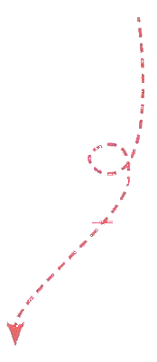

课文 2Text 2Текст 2
开学第一天，课堂上，学生们学习打招呼用语。On the first day of school, in class, the students were learning greeting expressions.В первый день занятий на уроке ученики изучали фразы приветствия.
朗读对话。Read the dialogue aloud.Прочитайте диалог вслух.
 Wáng Yīfēi王一飞
Wáng Yīfēi王一飞大家好！
xuéshēngmen学生们
老师，您好！
 Xiǎoyǔ小语
Xiǎoyǔ小语你们好！
xuéshēngmen学生们
你好，小语！
Wang Yifei: Hello, everyone!
Students: Hello, teacher!
Xiaoyu: Hello, all!
Students: Hello, Xiaoyu!
Ван Ифэй: Всем привет!
Студенты: Здравствуйте, учитель!
Сяоюй: Всем привет!
Студенты: Привет, Сяоюй!
生词New WordsНовые слова
②大家dàjiāpron.мест.everybodyвсе, каждый
③好hǎoadj.прил.good; fineхороший; ладно
④学生xuéshēngn.сущ.studentученик, студент
⑤们mensuf.суф.used after a personal pronoun or a noun to show plural numberсуффикс множественного числа (после личных местоимений и одушевлённых сущ.)
⑥老师lǎoshīn.сущ.teacherучитель, преподаватель
⑦您nínpron.мест.youВы (вежливая форма)
⑧你们nǐmenpron.мест.(plural) youвы (множественное число)
分角色朗读对话。Role-play the dialogue.Разыграйте диалог по ролям.
两人一组或多人一组，用真实姓名对话。Work in pairs or groups and have a dialogue using your real names.Работая в парах или группах, проведите диалог, используя свои настоящие имена.
002